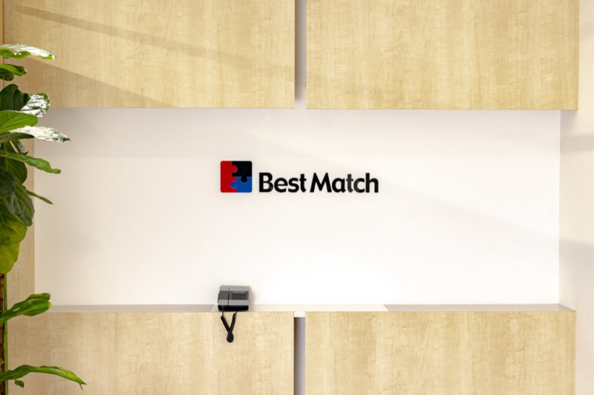
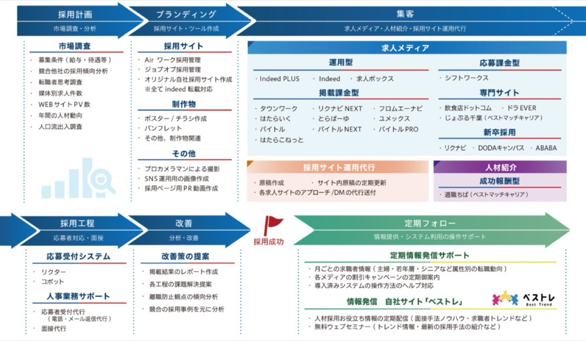
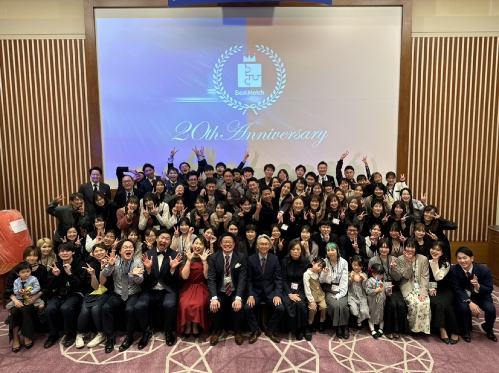

千葉県の雇用創出に尽力し続ける人材企業
玉井 幸太郎Kotaro Tamai
株式会社ベストマッチ 代表取締役
1988年、新卒で株式会社リクルートへ入社。一貫して人材採用領域を担当し、2004年に当時の上司と共に独立。株式会社ベストマッチを立ち上げ、取締役営業部長を経て2022年4月に代表取締役へ就任。現在に至る。
企業サイトを見るTRACK 01
千葉県の雇用創出に尽力し続ける人材企業

株式会社ベストマッチは、千葉県に特化して人材採用の総合支援サービスを展開している企業だ。県内の多種多様な業界で約5000社のクライアントを持つほか、グループ会社へ移管した人材紹介事業では年間約8000名の就職・転職希望者と接点を持つなど、企業と求職者の双方にとって文字通りベストなマッチングを創造し続けている。
「千葉県は有効求人倍率が全国47都道府県中46位（厚生労働省2024年3月公表）という立ち位置にいます。数字だけ見れば人の流動が少ないマーケットだと思われがちです。しかし、“雇用創出”という視点で見れば逆に全国屈指の伸びしろを持つマーケットと言えます。そこにこそ、私たちの存在価値があるのです」と熱く語るのは、代表の玉井幸太郎氏だ。
今日に至るまで人材採用領域一筋の道を歩み続けている玉井代表に、業界人として思う千葉県のマーケットの魅力や今後の展望について話を聞いてみた。
TRACK 02
クライアントの採用成功に、とことん伴走

2004年の立ち上げ当初から”千葉を元気に！！”というスローガンを掲げている株式会社ベストマッチは、千葉県内の企業や店舗と求職者のベストなマッチングを追求していく中で、採用成功に向けた伴走力を磨いてきたという。リクルート出身で同社の求人メディアを取り扱うパートナー企業としての実績を積み重ねてきたこの21年間、玉井代表はどのような想いを持ち続けてきたのだろうか。
「”採用成功”とひとくちに言っても、単に求人メディアへの出稿を取り扱うだけでは成し得ません。クライアントである企業や店舗の採用課題を見つけ、どのポジションや役割に就く人材が何名必要なのかを明確にすることから私たちのサービスは始まります。さらに応募があった後の受付や面接、入社後の育成など”定着”までを採用成功と置くならば、私たちはその全プロセスにおいて支援できる企業であるべきだと考えています。」
設立から21周年を迎えた2025年現在、株式会社ベストマッチは取り扱う求人メディアの拡充だけでなく、市場調査からホームページやパンフレットなどの採用ツール・コンテンツ制作、応募受付や面接の代行といった採用実務をはじめ幅広いサービスを展開している。すべては”採用成功”がもたらす雇用創出を通じて、クライアントにとことん伴走していく同社のスタンスを具現化させたものだ。その想いの原点は、新卒で株式会社リクルートへ入社した1年目にあるという。

TRACK 03
“スキルの抽象化”でAI全盛の時代に挑む
現在も千葉全域の人材業界を牽引している株式会社ベストマッチ。すでに同県の人材マーケットにおいて約11%のシェアを獲得しているが、あえて営業エリアを拡げずに千葉県内でのシェア拡大に尽力し続けるという。今後の展望として、人材業界をどう捉えているのだろうか。
「近年ではAIの技術革新が急速に進み、企業と求職者をスキルでマッチングさせるサービスがどんどん磨かれています。いわゆるジョブ型雇用には最適である一方、人の潜在的なスキルや志向にフォーカスした異業種・異職種への転職支援においては、長年にわたり培ってきた弊社の強みを発揮できると考えています。」
例えば株式会社ベストマッチのグループ会社に分社・移管した人材紹介事業ではこんな話がある。